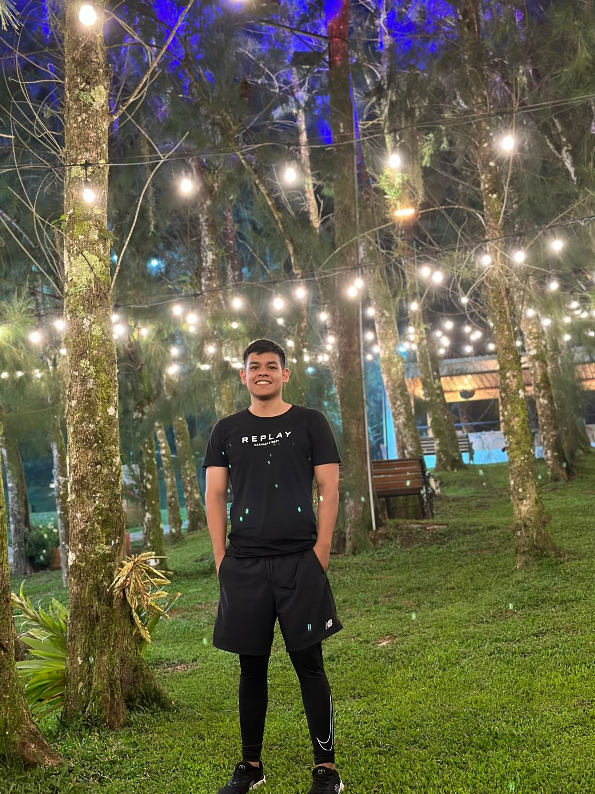
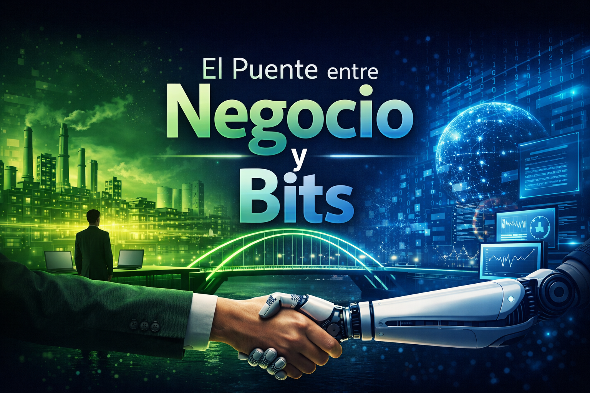

Elevando la Complejidad a
Soluciones Precisas.
Arquitectura de software, automatización inteligente y modelado de datos para operaciones que exigen escalar y dominar su ecosistema digital.

Más allá del código: Alineando tecnología con estrategia de negocio.
No me defino sólo por los lenguajes que escribo, sino por los ecosistemas que construyo.
Con una sólida base transversal como Ingeniero TIC y un Máster en Inteligencia Artificial, mi enfoque está en resolver problemas estructurales y transformar cuellos de botella operativos en flujos de trabajo autónomos, seguros y eficientes.
Concibo los datos como el activo core, la automatización como el motor y la Inteligencia Artificial como el catalizador necesario para escalar infraestructuras al más alto nivel corporativo.
Arquitectura Multidisciplinaria
Desarrollo de Software & Web
Construcción de aplicaciones robustas y ecosistemas web escalables. Diseño de arquitecturas modernas y resilientes, orientadas a máximo rendimiento y seguridad a nivel empresarial.
Data Architecture & SQL
Modelado avanzado de bases de datos relacionales orientadas a alto rendimiento y fiabilidad absoluta de datos.
Automatización Avanzada
Orquestación de procesos complejos mediante integración de APIs, n8n y potentes ecosistemas de herramientas cloud.
Inteligencia Artificial Aplicada
Integración de modelos analíticos y generativos en procesos operativos, resolviendo problemas de negocio críticos con rigor matemático y lógica algorítmica.
Servicios Profesionales
-
Consultoría Tecnológica Integral
Auditoría de sistemas y rediseño completo de flujos de trabajo digitales empresariales.
-
Arquitectura de Datos y Reporting
Transformación de información cruda a dashboards interactivos e Inteligencia de Negocios.
-
Desarrollo de Soluciones a Medida
Creación de APIs REST, lógicas de backend robustas y plataformas internas especializadas.
Ecosistema & Stack
Certificaciones Destacadas
Máster en Inteligencia Artificial
Universidad de los Andes
Especialización avanzada en Machine Learning, Deep Learning, Visión Artificial, Procesamiento de Lenguaje Natural (NLP) y desarrollo de sistemas autónomos de alto nivel.
Ingeniero en TIC
Universidad Libre Seccional Cúcuta
Ingeniería en Tecnologías de la Información y Comunicaciones (TIC).
Certificaciones Coursera
Programa de especialidad y formación continua en ciencias de la computación, incluyendo "Introducción al análisis de sistemas de control con Matlab" e "Introducción a la ciencia de datos".
Ejecución Constatada: Business Cases
Orquestación de Flujos Pipeline n8n
Problema: Procesos operativos manuales propensos a error humano e ineficiencia estructural en la comunicación entre CRMs y bases de datos transaccionales.
Solución: Diseño, modelado e implementación de un pipeline estructurado en n8n integrando APIs críticas y sincronizando ecosistemas asíncronos.
Resultado: Reducción del 80% en tiempo operativo, logrando coherencia de datos masterizada en tiempo real sin intervención humana.
Optimización de Estructuras Relacionales
Problema: Consultas SQL ineficientes y diseño de esquemas heredados ahogando recursos del servidor y ocasionando caídas en periodos de alta concurrencia.
Solución: Auditoría de arquitectura, remodelado del esquema de base de datos relacional, implementación de índices y reescritura técnica de consultas complejas.
Resultado: Ejecución de operaciones 10x más rápidas y mitigación al 100% de tiempos de caída bajo carga masiva de transacciones.
El Puente entre Negocio y Bits
La diferencia entre un desarrollador convencional y un ingeniero de soluciones radica esencialmente en el "por qué" de cada construcción.
Cada línea de código que escribo, cada tabla en la arquitectura de base de datos que planeo y cada micro-flujo automatizado que diseño, se ata de forma irrevocable a un KPI de negocio. Entiendo cómo hablan los directivos para diagnosticar la necesidad, y poseo la estructura técnica rigurosa pertinente para traducirlo en una obra de ingeniería duradera, escalable y valiosa.

¿Listo para escalar la arquitectura técnica de tu operación?
Completa el formulario para agendar una reunión estratégica y evaluar cómo podemos potenciar tu infraestructura digital.